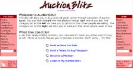
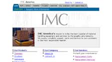

Fatdeal
This site was started as an independent study, but is no longer active at fatdeal.com. It allows online shoppers to look for coupons at their favorite stores. Member features allow people to store coupons in a "coupon wallet", keep an eye on their favorite sites, and set up coupon alerts based on their preferences. Chalk this up as another failed dot-com.
- Team Members
- Bill Long
- Technologies
- ASP, Microsoft SQL Server
Auction Blitz
For the Intro to Electronic Commerce class we created this site based on some research on auction theory. It is similar in format to ebay, but instead of one auction type we implemented three. It could theoretically replace the current CMU system misc.market because the "sealed bid" option allows people to trade goods instead of simply buying or selling them.
- Team Members
- Ben Pillet, Mike Walsh, Cameron White
Album Greetings

This was a project for the junior level information systems project course. It was an online photo album that allowed people to upload photographs, configure and manage multiple photo albums, and share these albums with friends by creating passworded albums.
- Team Members
- Kim Celone, Ray Park, Chris Stratis, Jen Tso
- Technologies
- ASP, Microsoft Access
IMC America
This is the first site Bill and I did for an actual company, which was launched online at imcamerica.com. This was largely an exercise in information architecture defintion, followed by front-end coding and design.
- Team Members
- Bill Long
Where Is Bob?
This site was launched at whereisbob.com and began as a project for Web Business Engineering. It was an online game that allowed visitors to hunt around a map for this character named Bob. If they sign up for membership, they were able to earn points, keep statistics, and store the clues they picked up during the search.
- Team Members
- Brendan Lund, Bill Long
- Technologies
- ASP, Microsoft Access
GSIA Job Offer Reporting
This site was used by students at Carnegie Mellon's GSIA to report their job offers. Administrative features allow career center personnel to review and verify the offers, and receive nightly e-mail notifications about which students accepted which offers each day.
Read more January 2000